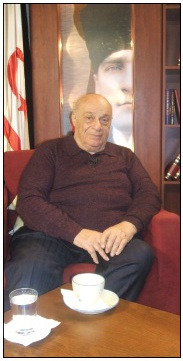
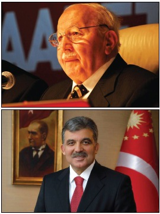
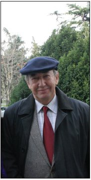

Refah-Yol hükümeti yeni güvenoyu almıştı, Abdullah Gül KKTC’den sorumlu devlet bakanı konumundaydı.
Temmuz 1996’da bir süreliğine Girne’de bulunuyordum, tatil için gitmiştik. Benim tatilimden ne olacak? Kitaplar, yazılar, bahçede Ercan taşına yapılan oymalar ya da arka bahçede Kıbrıs’ın yaz sıcağında kazdığım mağara!
Eşim ve çocuklar denizi tercih ederlerdi; benimki biraz farklıdır, galiba kendime eziyet etmeyi seviyorum. Ama bu tatlı bir eziyet, ağır bahçe işleri, kemer inşaatı, mağara kazmak ya da kitap yazmak gibi şeyler.
Rauf Denktaş’tan telefon geldi, beni öğle yemeğine Yılanlıada’daki evine davet etti.
Eşimle birlikte gittik, tarih 13 Temmuz 1996, yani 20 Temmuz’a bir hafta var.
Yemek sırasında Denktaş’a sordum: “Sayın Başkan, yeni Başbakanı, Necmettin Erbakan’ı 20 Temmuz kutlamaları için KKTC’ye davet ettiniz mi, etmeyi düşünüyor musunuz?”
Denktaş bana, “Yahu adamcağız daha yeni başbakan oldu, işi başından aşmış, sıkıntılı bir durumda zaten, gelebileceğini hiç sanmam,” dedi. Ben de, “Siz yine de davetinizi yapın, hiç belli olmaz,” yanıtını verdim. Yardımcısı Durmuş Bey’e Başbakanlık Özel Kalemi’ni aramasını söyledi ve sonunda yeni başbakan Necmettin Erbakan’a ulaştı.



Girizgâhtan sonra davetini yaptı. Erbakan Denktaş’a çok meşgul olduğunu söyledi ve işi “İnşallah ileride olur,” diye bağladı.
Konuşmaları bittikten sonra Denktaş’a: “Şimdi izninizle ben KKTC’den sorumlu Devlet Bakanı Abdullah Gül ile görüşmek istiyorum, kendisi ile özel bir hukukum var,” dedim.
Denktaş şaşırmıştı: “Nasıl yani...” diye ağzından bir hayret ifadesi çıktı.
Ben de Sayın Abdullah Gül ile özel hukukumuzu özetledim: 1979’da üç dört ay kadar Sakarya Üniversitesi’ne, cuma günleri ders vermek üzere, misafir hoca sıfatıyla gitmiştim. Sakarya Üniversitesi Rektörlüğü bana orada görevli bir asistanı yardımcı olarak tayin etti.
Bu asistanın (araştırma görevlisinin) adı Abdullah Gül idi. Ben 38 yaşında bir profesör, kendisi 28-29 yaşında genç bir akademisyendi.
Bir süre akademik beraberliğimiz oldu. İş bununla da bitmedi, 1981 yılında Prof. Nevzat Yalçıntaş fakültede odama geldi: “Erol Hoca, tez danışmanı olduğum bir doktora öğrencisi var, tez konusu Türkiye-Ortadoğu ticari ilişkileri, senin konun, tez jürisi olur musun? Zaten kendisiyle daha önce de beraber çalışmışsın, onu tanıyorsun.”
Jüri üyeliği önerisini kabul ettim. Abdullah Gül sözlü ve yazılı sınavlarında iyi ve pekiyi dereceler aldı ve sonuçta “pekiyi” ile tezi kabul edilmiş oldu.
Tez jürisinde benimle birlikte Prof. Nevzat Yalçıntaş, Prof. Toker Dereli, Prof. Nuret Ekin ve Prof. Erdoğan Alkin de bulunuyordu.
Rauf Denktaş biraz şaşırmıştı; ben de şaka yollu, “Sayın Başkan, biz üniversite hocalarının siz ünlü politikacılar gibi popülaritesi yoktur, ama işin hocalık boyutunda her kesim ile akademik ilişkilerimiz bulunur,” dedim.
Ve hemen Durmuş Bey’den, KKTC’den sorumlu devlet bakanının özel kalemini aramasını istedim.
Birkaç dakika sonra Erbakan hükümetinin yeni devlet bakanı Abdullah Gül telefondaydı. KKTC’den sorumlu yeni Devlet Bakanı Sayın Abdullah Gül’e aynen şunları söyledim: “Yılanlıada’da Sayın Rauf Denktaş’ın evindeyim; Başkan karşımda oturuyor, biraz önce kendisi Başbakan Necmettin Erbakan ile bir görüşme yaparak, kendisini 20 Temmuz için KKTC’ye davet etti.
“Ancak Sayın Başbakan işlerinin çokluğunu öne sürerek işi ileriye attı. Acaba kendisini ikna edebilir misin? Hatta kendisine, 20 Temmuz 1974’te Ecevit’le birlikte bulunduğunu da hatırlatmakta yarar olabilir.”
Rauf Denktaş, Abdullah Gül ile görüşmemizi biraz da şaşkınlıkla izliyordu, çünkü Gül ile çok samimi bir üslup içinde konuşuyordum, sanki kardeşimle konuşur gibi.
Akademik hayatta böyledir; hele aranızda asistanlık, doktora öğrenciliği gibi akademik ast üst ilişkileri bulunuyorsa, “biçimsel öğeler ikinci plana atılır.”
Rauf Denktaş’a bunları da söylediğimi hatırlıyorum.
Ve sonra neler oldu?
Sayın Abdullah Gül hemen her gün beni arayıp bilgi vererek, “İlk günler gelme ihtimalimiz çok zayıf; üçüncü, dördüncü gün bir ihtimal var. Büyük ihtimalle 18 Temmuz’da geliyoruz,” mesajını verdi.
Sayın Abdullah Gül, Başbakan Necmettin Erbakan’ı 20 Temmuz 1996’da bir günlük gezi için KKTC’ye gitmeye ikna etmişti.
20 Temmuz öğle yemeğinde Girne Dome Oteli’nde Rauf Denktaş, Necmettin Erbakan, Abdullah Gül ve bendeniz beraberdik. Yeni Başbakan Erbakan’ın KKTC’yi (ve Denktaş’ı) ziyareti sürpriz olmuştu. Bu sürprizde en büyük katkı KKTC’den sorumlu Devlet Bakanı Abdullah Gül’e aitti.
Benim de çorbada tuzum bulunuyordu; sadece Sayın Gül ile tesadüfen kesişen akademik hayatımın bir sonucu olarak...
Sayın Abdullah Gül 1993’te doçent oldu, aynı yıl politikaya girdi, tek yanlı Gümrük Birliği anlaşmasının imzalanması sırasında, benim görüşlerime Refah Partisi milletvekili olarak büyük destek verdi.
8 Mart 1995’te TBMM’de tarihi bir konuşma yaptı. Bu konuşmada, bir akademisyen olarak, bana da atıfta bulunuyordu.